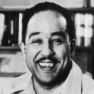

About Mr. Lanston Hughes
To The Index!
James Mercer Langston Hughes was an American poet, social activist, novelist, playwright, and columnist from Joplin, Missouri. He moved to New York City as a young man, where he made his career.
Mr. Langston Hughes was born in 1902 of Febuary 1st. He passed on 1967 of May 22nd.
